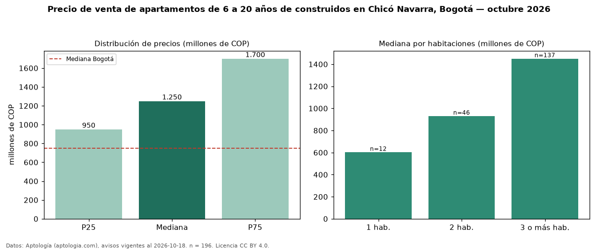

Precio de venta de apartamentos de 6 a 20 años de construidos en Chicó Navarra, Bogotá — octubre 2026
COP 1,25 mil millones es el precio mediano de apartamentos de 6 a 20 años de construidos en venta en Chicó Navarra (localidad de Usaquén), Bogotá (n = 196 avisos). Frente a la mediana de todos los apartamentos en venta de Chicó Navarra (COP 1,20 mil millones, n = 632), queda 4 % por encima; este segmento reúne el 31 % de esos avisos. Por metro cuadrado, la mediana es COP 8,60 millones/m² (n = 195), 10 % por encima del conjunto de referencia (COP 7,85 millones/m²). El área mediana anunciada es 151 m². El segmento con más oferta es el de 3 o más habitaciones (137 avisos, mediana COP 1,45 mil millones); pasar de 1 habitación a 3 o más habitaciones cambia la mediana +141 %. La administración mediana declarada es COP 1,20 millones al mes (n = 188). El estrato más frecuente es 6 (95 % de los avisos con estrato). La mitad central de los avisos va de COP 950 millones a COP 1,70 mil millones (razón 1,8), una dispersión moderada. Datos: Aptología (aptologia.com), CC BY 4.0 — https://www.aptologia.com/venta/bogota/chico-navarra. Archivos: PDF, CSV con las cifras y gráfica PNG.

| Avisos únicos | 196 |
|---|---|
| Percentil 25 | COP 950.000.000 |
| Mediana | COP 1.250.000.000 |
| Percentil 75 | COP 1.700.000.000 |
| Mediana por m² | COP 8.600.000 |
Fuente: avisos vigentes de portales inmobiliarios recopilados por Aptología, deduplicados (mínimo 30 avisos únicos por celda). Precios pedidos, no cerrados. Fecha: 2026-10-18.